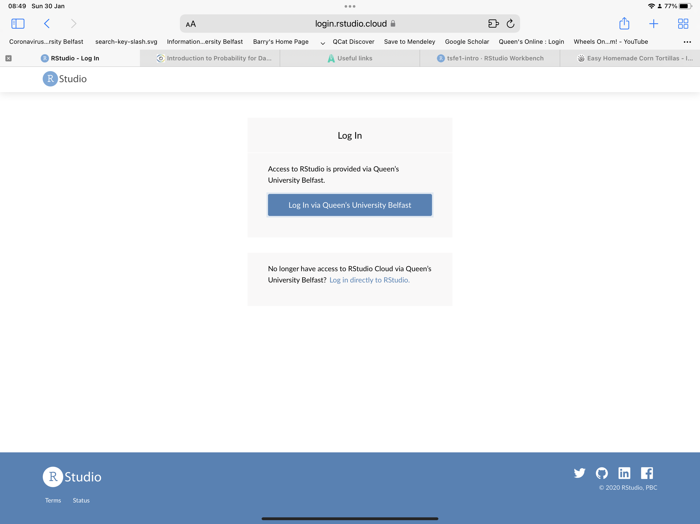

FIN7028: Advanced Financial Data Analytics
Setting the scene
Barry Quinn CStat
2024-01-25
Contact details
- Barry Quinn b.quinn@qub.ac.uk
- Chartered Statistician (Royal Statistical Society)
- 8 years industry + 12 Academia
- Office hours and Coding Clinics by appointment
Learning outcomes
- Begin to understand econometrics as a science of uncertainty and variation.
- Introduction to the ethical application of statistics using dynamic reporting and literate programming.
- Exhibit intellectual humility and discipline in data analytics.
- Understand the iterative process of real-world data analysis.
- Understand how to use statistical techniques to calibrate answers to many problems posed in Finance.
- Understand how to source, prepared and encode financial time series data.
- Obtain analytical skills to identify patterns in data.
- Understand how to robustly infer real-world effects from statistical analysis.
- Understand how to encode analytical questions using statistical software.
- Work independently or in groups towards an empirical goal.
Professional skills
- Modern data science
tidydata principles. - Literate programming principles Donald Knuth.
- Open science analytics using cloud computing .glowlineQ-RaP-https://sso.rstudio.cloud/q-rap
- Responsible research principles to produce sensible statistical inference.
- Principles of appropriate data visualisation.
- The ability to work independently to glean meaning from noisy financial data.
- Advanced professionalism through improved independent learning/research techniques.
Statistical thinking skills
- Gain insight into the limitations of statistical models
- Begin to use statistical models responsibly, ethically, and professionally.
- To have enough statistical knowledge to be comfortable with knowing that you don’t know.
Building up your empirical stamina
Teaching and learning philosopy
Instil:
Intellectual discipline
Think critically and form your own opinions
Intellectual humility
Enough confidence to be comfortable in your own confusion
Good citizenship
Acting ethically, altruistically, responsibly and professionally
Employability
Develop students into employable graduates
Teaching and learning approach
- Lectures will combine concepts and financial application with live-coding.
- Come prepared and bring your laptop or device with web browser.
- Interactive tutorials on QMS Remote Analytics Platform (Q-RaP).
Feedback
- Student feedback is important to me and I will provide this in a professional manner conditional on students behaving in a professional and courteous manner.
- Each week there will be an anonymous poll where you can give feedback.
- I am a NICE person when students act in a professional and courteous.
- Otherwise I can be a fastidious scold.
Read my communiction policy link
Q-RaP
Queen’s Business School Remote Analytics Platform
you used to have this
and now you have this
What is Posit Cloud?

Posit Cloud created to make it easy for professionals, hobbyists, trainers, teachers, and students to do, share, teach, and learn data science using
Spot the Difference?


First look
Your turn
👩💻 Students:
- login to Q-RaP using your QUB credentials
- Create a new project and give it a name
- Install a package of your choice
- Create a template R Markdown document in the project
- Change the access level of the project so others can see it as well
- Copy the project URL and share it with a friend in class
05:00
Course overview
- Prerequistes:
- Financial Data Analytics
- A laptop or device you can access Q-RaP
- A growth mindset
- Asessement: 50% project + 50% computer-based class test
- Course also has a companion open sourced book found here https://q-rap.connect.qub.ac.uk/AFDA/
- All slides are hosted on GitHub and can be converted to PDFs as you desire.
Active learning and the 15 minute rule
- We will use the 15 minute rule in this class.
- If you encounter problems, spend 15 minutes troubleshooting on your own.
- Make use of Google and StackOverflow to resolve the error
- If your problem is not resolved after 15 minutes.
- Ask for help by booking into a coding clinic or in practicals
Plagiarism
- I am trying to balance two competing perspectives:
- Collaboration is good
- Collaboration is cheating
- In-class collaboration is good to a point.
- You are always expected to write and submit your own work.
- Asking for help is ok (after 15 minute rule),
- Blindly copy from your peers (or published work) is not.
To explain, predict or describe
- It is wrongly assumed that high explanatory = high predictive power.
- Explanatory models apply statistics to data to test casual hypothesis of theoretical constructs.
- Prediction models apply statistics or data mining algorithms to data to predict future observations.
- The type of model uncertainty is different for each choice.
- Explaining minimises bias, while prediction minimises bias + variance occasionally sacrificing theoretical accuracy for empirical precision.
Building a model
- How to use probability to do typical statistical modeling?
- Design the model (data story)
- Formulated using theory from previous studies
- Condition on the data (update or estimate model)
- Evaluate the model (critique)
- And Repeat Until Satisified
Reading finance papers (the context)
- You data story comes from reading research papers
Research project tips
- What is the puzzle the paper is trying to solve?
- How do they solve it?
- Does it develop a new model?
- Is it an existing technique with a new application?
- Is it a data mining excercise?
- Is the data of good quality ? Reliable, sample size etc.
Reading finance papers
Research project tips
- Have model assumptions been validly checked and critiqued?
- Are results interpreted sensibly or exaggerated?
- Do results actually address the questions posed?
- Have conclusions been drawn appropriate or overstated?
Model comparison
- Instead of falsifying a null model, compare meaningful models
Basic problems
- Overfitting or Data Snooping
- Causal inference
- Ockham’s razor is silly - Information theory is less silly
- AIC, cross-validation
- Must distinguish prediction from inference]
Applying financial data analytics
Describe
- Estimating parameters of well-defined probability models that describe the behaviour of financial time series.
Explain
- Testing hypotheses on how financial markets generate the series of interest.
Predict
- Forecast future realisations of the financial time series.
class: center
Questions ?
Embracing Complexity
- Paradigm shift in financial analytics
- Integration of machine learning, classical financial time series econometrics, and Bayesian methods
- Addressing complex, uncertain, and conflicting objectives in finance
- Inspired by seminal works like (Bryan T. Kelly, Malamud, and Zhou 2022; Bryan T. Kelly and Xiu 2023)
Financial Markets: A Complex Predictive System
- Understanding market prices as predictions
- Use of ARIMA and GARCH in classical econometrics
- Limitations of traditional approaches in modern finance
- The challenge of complex and vast datasets
The Predictive Nature of Market Prices
- Asset pricing model: \[P_{it} = E[M_{t+1} X_{it+1} | I_t ]\]
- Components: Asset price, expectation, stochastic discount factor, future payoff, available information
- Market prices as aggregated investor predictions
The Role of Bayesian Methods and Machine Learning
- Bayesian methods for probabilistic modeling and incorporating prior knowledge
- Machine learning for handling large datasets and complex models
- Complementing traditional econometrics with advanced techniques
Unifying Theoretical Foundations
- Machine learning’s overparameterization and regularization
- Bayesian methods for dynamic and adaptive modeling
- Balancing high-dimensional data and probabilistic inference
Synergising Econometrics, Bayesian Methods, and Machine Learning
- Comprehensive toolkit for financial market analysis
- Econometrics for foundational models
- Bayesian methods for adaptability
- Machine learning for predictive power
Adopting a Growth Mindset While Learning Advanced Financial Data Analytics
- Importance of a growth mindset in learning analytics
- Characteristics: Embracing challenges, persistence, leveraging feedback, learning from success, avoiding complacency
- Benefits: Improved performance, resiliency, collaboration, adaptability, long-term focus
- Strategies for fostering a growth mindset: Setting goals, tracking progress, seeking opportunities, engaging peers, accepting mistakes
Wrap-up
- Detailed exploration of methodologies in financial data analytics
- Embracing complexity in financial markets
- Enhancing understanding and decision-making through integrated approaches
References

Kelly, Bryan T, Semyon Malamud, and Kangying Zhou. 2022. “The Virtue of Complexity Everywhere.” SSRN Electronic Journal. https://doi.org/10.2139/ssrn.4171581.
Kelly, Bryan T., and Dacheng Xiu. 2023. “Financial Machine Learning.” SSRN Electronic Journal. https://doi.org/10.2139/ssrn.4520856.